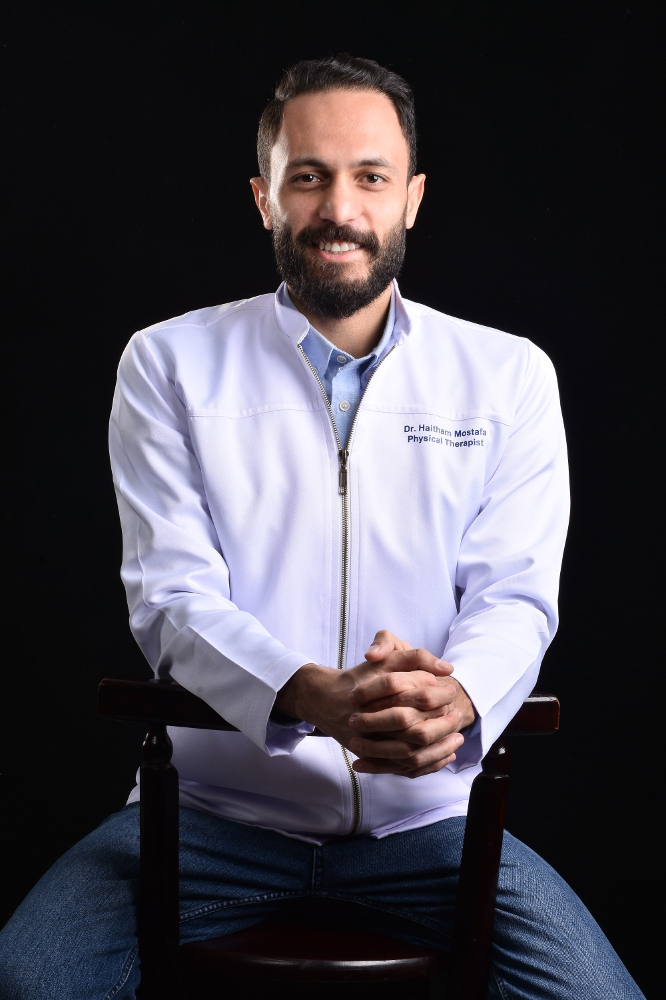
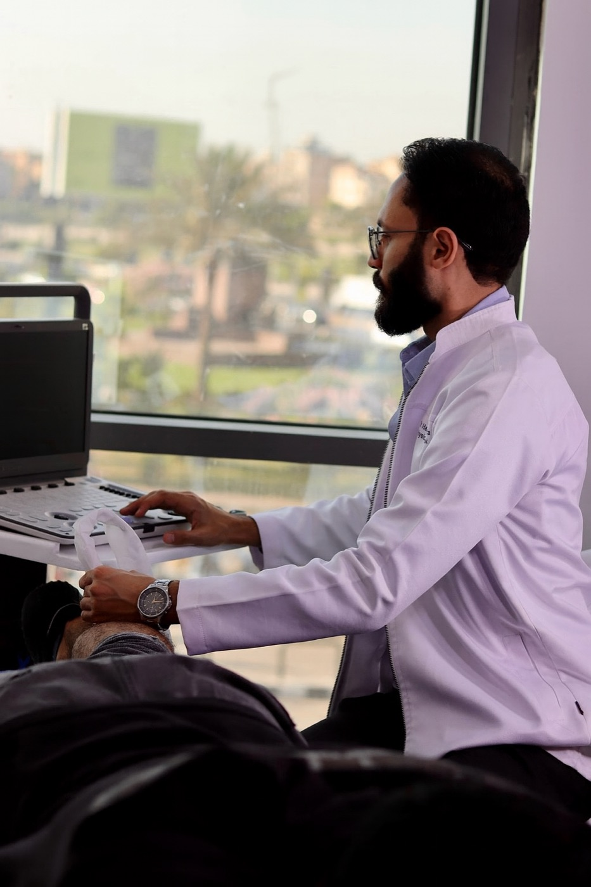

Sports Injury Rehab
Muscle tears, ligament and cartilage injuries, ankle sprains, and safe, staged return-to-play programs.
Get back to the field — and to pain-free movement — safely, with precise ultrasound diagnosis and a rehab program built around your injury.

Specialized rehab for athletes and a safe return to play.
Precise diagnosis of muscles, tendons and ligaments.
Faculty of Physical Therapy — Cairo University.
Years of work with injuries and athletes.
Dr. Haitham Mostafa Youssef is a physical therapist specialized in sports injury rehabilitation and musculoskeletal ultrasound diagnosis, practicing since 2016. He holds an M.Sc. in Physical Therapy from Cairo University and is currently a PhD researcher at the same university. He also holds the FIFA Sports Injuries Diploma and is a Mulligan and Maitland Concept practitioner in manual therapy.
He believes the right treatment starts with an accurate diagnosis. That's why he uses musculoskeletal ultrasound to pinpoint the location and grade of an injury, then builds a clear, phased rehab program until you're safely back to your activity or your sport.
A core focus on sports injuries and ultrasound diagnosis, plus treatment and rehab programs for muscle, bone and joint problems.
Muscle tears, ligament and cartilage injuries, ankle sprains, and safe, staged return-to-play programs.
Ultrasound assessment of muscles, tendons and ligaments to locate and grade injuries and track healing.
Rehabilitation after ACL reconstruction, joint replacement, fractures, and shoulder or knee arthroscopy.
Disc herniation, sciatica, spinal degeneration, and muscle spasms linked to long hours of sitting.
Knee osteoarthritis, shoulder stiffness and pain, and tendinitis — to reduce pain and improve movement.
Hands-on manual therapy, including the Mulligan and Maitland Concepts, combined with a therapeutic exercise plan to build strength and prevent recurrence.
A gentle, specialized manual technique to reduce swelling and fluid build-up after surgery or injury and support lymphatic flow.
Post-training and post-match sessions for athletes to ease muscle fatigue and speed up recovery, combining manual therapy and stretching.
Wet and dry cupping performed by a specialist, as a complementary part of your treatment plan when it suits your case.
Clear steps, each one building on the last.
We listen, review your history and imaging, and perform a full clinical examination.
We pinpoint the cause of the problem — using ultrasound when needed.
Sessions tailored to your case, with clear goals and an expected number of sessions.
We measure progress and give you an exercise program that protects you from re-injury.

A sports rehab gym, private treatment rooms and therapeutic exercise equipment — at Fizio Medix Center, 6th of October City.
The questions we hear most about booking, ultrasound diagnosis and the road to recovery.
Message us on WhatsApp and the doctor will get back to you.
Ask on WhatsAppThe main difference is that treatment here relies much more on hands-on manual therapy than on machines. A session isn't about being hooked up to a device and waiting — your therapist works with you directly using manual techniques such as Mulligan and Maitland, alongside therapeutic exercise designed for your injury. Devices are used only as a supporting tool when they genuinely add value. And on-the-spot musculoskeletal ultrasound lets us treat the real cause and track your progress clearly.
No, you can book directly. If you're under an orthopedic surgeon's care or had surgery, bring their report and any previous imaging so we can build on the same plan.
Any X-rays, MRI or ultrasound scans you've had, your operative report if you had surgery, and a list of your medications. Wear comfortable sportswear so the injured area is easy to examine.
We start with a full assessment: your injury story, movement, strength and where it hurts — plus a musculoskeletal ultrasound in the same visit if needed. You leave understanding your diagnosis, your treatment plan and your first exercises.
Yes — the center has 5 female physical therapists. If you'd prefer your sessions with a female therapist, just mention it in your booking request or message us on WhatsApp and we'll arrange it.
Ultrasound images muscles, tendons and ligaments while they move, is done in the clinic during your visit, and lets us compare the injured side with the healthy one and track healing from session to session. MRI is better for other things, such as cartilage inside the joint and bone — if you need one, we'll tell you.
No. Ultrasound uses no radiation and doesn't hurt, so it can safely be repeated — which is what makes it ideal for monitoring how an injury heals.
Not necessarily. In many cases a clinical exam with ultrasound is enough for a diagnosis. If we need further imaging, we'll explain why and exactly what we're looking for.
Return isn't based on a number of days but on criteria: pain, range of motion, strength compared with the healthy side, and movement tests such as running, jumping and changing direction. We bring you back in stages to lower the risk of re-injury.
It's decided after the assessment, based on the type and grade of the injury and your goal — pain-free daily life or returning to competition. We tell you the expected number up front and review it as you improve.
They're well-established manual therapy approaches for improving joint movement and reducing pain. Mulligan mobilizes the joint while you perform the movement yourself; Maitland uses graded, gentle joint movements. They should feel comfortable — if anything hurts we adjust right away. Mild soreness afterwards can happen and usually settles within a day or two.
Yes, and it's very helpful for surgeries like ACL reconstruction: rehab before surgery reduces swelling and improves movement and muscle strength, which makes recovery easier. After surgery, we follow the protocol in coordination with your surgeon.
Send us your details and we'll get back to you to confirm the time.